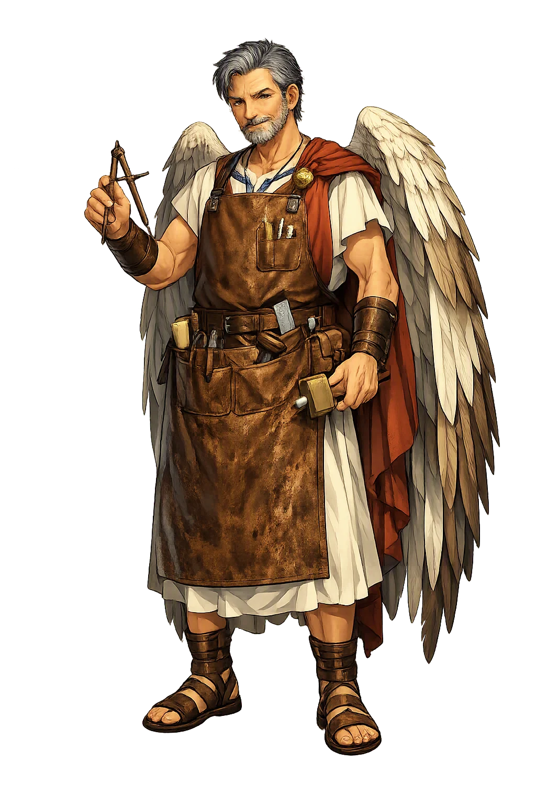
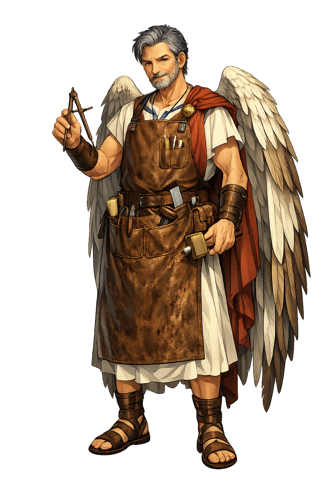

Stories of Daídalos
The myths of Daidalos are preserved in Homer, Apollodorus, Diodorus, and Ovid: a small cycle that celebrates human invention and prices it — envy, exile, and the fall of a son. Every artifact he makes works exactly as designed, and every design costs him something he did not intend to pay.
Daedalus' first recorded act is his worst. His sister entrusted her son to his tutelage — the boy is Perdix in Apollodorus (Library 3.15.8), Talos or Calos in Ovid (Metamorphoses 8.236-259) — and the pupil outshone the master: Perdix invented the saw, taking his cue from a fish's spine or a snake's jaw, and then the potter's wheel and the compass. 'Fearing he might outstrip him,' Ovid writes, Daedalus hurled him from the Acropolis; Athena caught the falling boy and changed him into the partridge — perdix — that still flies low, remembering the fall. Daedalus was banished and fled to Crete. The myth plants its theme at the very root of his career: the first great maker of the Greek imagination is also the first to destroy a rival talent, and the tradition never lets him forget it — the partridge flutters through his story like a conscience.
At the court of Minos, Daedalus built the monument that defines him: the Labyrinth, 'a maze with winding paths, confusing and impassable,' designed to imprison the Minotaur — the bull-headed child born of Pasiphaē and the Cretan bull (Apollodorus, Epitome 1.7-9). The maze was so cunning that its maker, Apollodorus says, could barely find the way out. When Theseus came to Crete as tribute, Ariadne fell in love with him and gave him the thread that marked the path through the puzzle — in Hyginus' version (Fabulae 43) the stratagem was Daedalus' own. Plutarch (Theseus 15) preserves the rationalizers' spin: a prison, an ordinary house, a dance-floor — the ancients were already decoding it. The myth's point needs no decoding: the greatest craftsman in Greece builds a structure whose only function is that no one inside it can get out — including, soon enough, its maker.
Minos imprisoned Daedalus and his son Icarus in the Labyrinth — some say a tower — and the inventor answered confinement with flight. He gathered the feathers the gulls left on the shore, sorted them by size, and bound them with thread and wax, shaping two pairs of wings 'like a bird's, but fitted to human shoulders' (Ovid, Metamorphoses 8.183-189). His speech to Icarus is the myth's heart: fly the middle course — too low and the spray wets the feathers, too high and the sun melts the wax; 'take the middle way.' The boy exults and climbs; the wax softens; he falls into the sea that forever bears his name. The sources disagree on the physics — Apollodorus (Epitome 1.11-13) says Icarus flew too low, dazzled by the sun glittering on the waves — but either way the wax is the argument. Daedalus, 'now neither a father nor a son,' reaches Sicily alone: the wings work, and the warning is the first thing that fails.
In Sicily, King Cocalus sheltered the fugitive, and Daedalus repaid him with wonders: the fortified city of Camicus and warm baths, Diodorus reports (4.78-79). Minos came in pursuit, tracing the fugitive by a famous challenge — a great reward to whoever could pass a thread through a spiral seashell. Daedalus solved it by tying silk to an ant; Minos demanded the hand of the solver, and Cocalus' daughters, acting on Daedalus' counsel, scalded the king to death in his bath (Apollodorus, Epitome 1.14-15; Hyginus, Fabulae 43; the shell-trick lives on in the paroemiographers). The tyrant who owned a labyrinth died in a bathroom, undone by a thread and an insect. The episode completes Daedalus' portrait: every pursuit of him ends in a puzzle only he can solve, and every puzzle protects him — his genius is his armor, and it is never enough to make him safe.
Before the wings, Daedalus was already famous for figures that moved. Homer knows 'the dancing-floor which Daidalos once made for fair-tressed Ariadne in spacious Knossos' (Iliad 18.590-592), and classical tradition credited him with the first statues to open their eyes and part their limbs — Pliny (Natural History 36.13) has him inventing walking statues. Plato gives the thought its sharpest form (Meno 97d): Daedalus' statues are so lifelike that 'if they are not tied down, they run away' — and Socrates jokes that his own arguments need the same tether. The joke contains the whole myth: Daedalus' creations keep escaping their maker's intentions, from the Labyrinth to the wings to the nephew he could not keep from soaring. Ingenuity, in his case, is the art of making things that outrun him — which is why his name became the Greeks' word for anything so skillfully made it seems alive, and so alive it cannot be controlled.
Inventor, Architect, and Wingsmith
Daidalos is the master craftsman of Greek mythology: the architect of the Labyrinth, the maker of moving statues, and the father of Icarus. His name means 'cunningly wrought' and became a byword for any work so skillful that it seemed alive. He is the first engineer in Western literature, the inventor whose ingenuity saves him and destroys those he loves.
The maze he built at Knossos to contain the Minotaur — so cunning that its maker could barely find the way out (Apollodorus, Epitome 1.7-9).
The feathered wings he fashioned from wax and twine to escape Crete — the technology that saves the maker and kills his son (Ovid, Metamorphoses 8.183-235).
The moving statues he made so lifelike that Plato says they had to be chained down lest they walk away (Meno 97d).
The transforming power of human skill, celebrated and feared by the Greeks — every artifact of his works exactly as designed, and every design costs him something.
From the original script to the living URL
Δαίδαλος
The name in its original Greek form. Daídalos (Δαίδαλος) is attested in the source tradition — “Cunningly wrought”. Its diphthongs and acute accents carry the full phonetic and orthographic weight of the source tradition.
daedalus
Reduced to plain daedalus, the name loses everything that made it specific: diphthongs and acute accents. What remains is an ASCII string that machines can parse but that no longer speaks with its original voice.
Daídalos
The Unicode restoration recovers what ASCII flattened. Daídalos restores diphthongs and acute accents, returning the name to its original written dignity. The domain encodes to Punycode, but the browser displays the truth.
Daídalos.com → xn--dadalos-8ya.com
The non-ASCII characters in Daídalos are encoded while the ASCII remains visible. To the DNS, it is Punycode. To humanity, it is Daídalos.
Owned, ideal, and ASCII forms of Daídalos
Daídalos
Restores Δαίδαλος. The full Unicode restoration. daídalos.com is not in the PuniCodex collection — it is watched for release; if it drops, this temple upgrades to an owned flagship.
daedalus
Flattens Δαίδαλος. The plain ASCII fallback — what DNS and legacy systems see.
How Daídalos was spoken
How Daídalos is preserved in writing
A bespoke provenance study for Daídalos is being prepared by the PUNICODEX scholarly team.
Contribute scholarly provenance →Daidalos is the first Western portrait of the inventor as tragic hero. His gifts are extraordinary; his judgment is not. He kills his nephew from envy, builds a prison for a monster, and loses his son to the very technology that saved him. Each invention solves one problem and creates another, and the pattern is so consistent that the Greeks made his name an adjective for any cunningly wrought thing.
Enter Extended Lore